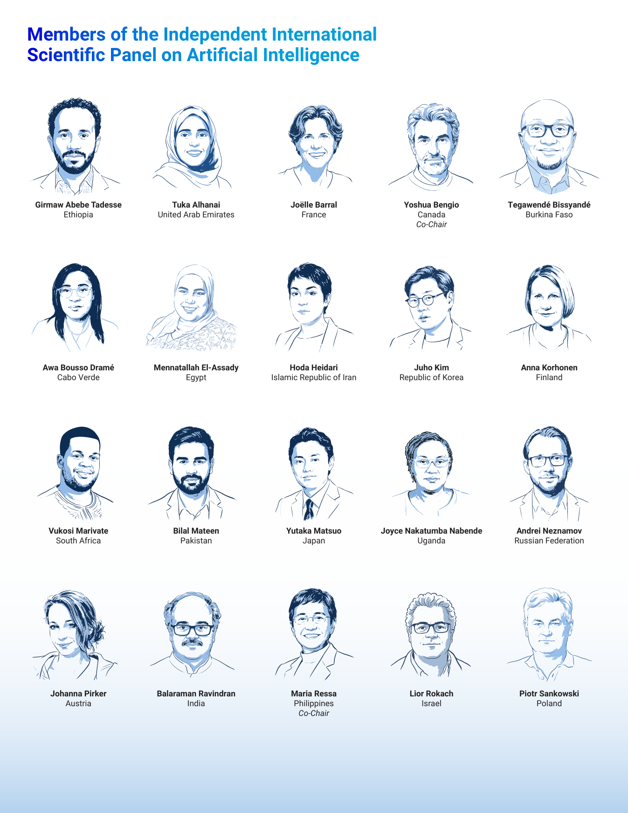
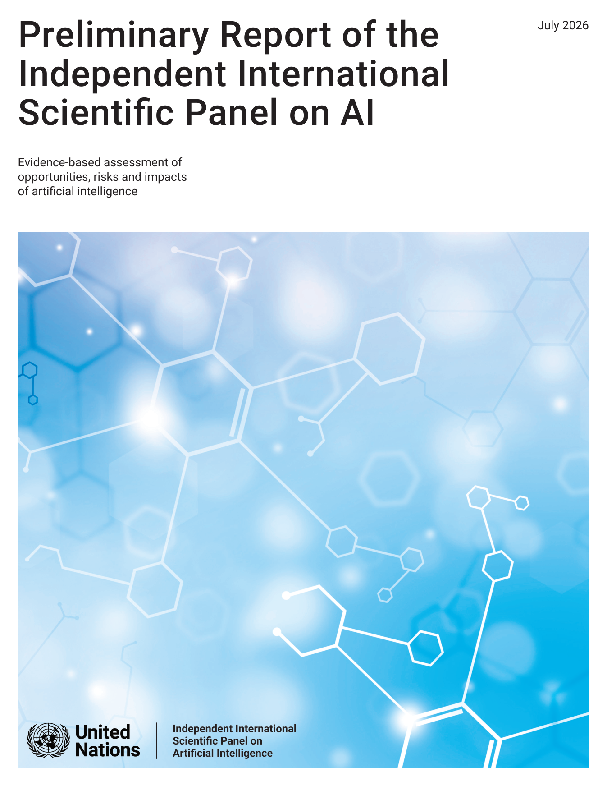

UN이 결의로 세운 첫 세계 AI 과학패널이 예비 보고서를 냈습니다. 40인의 과학자가 정치색을 뺀 증거만으로 AI를 평가했습니다.
핵심 진단은 하나입니다. AI 능력은 빠르게 뛰는데, 그것을 재고 다스릴 증거와 제도는 걷고 있습니다.
힘도 쏠려 있습니다. 미국이 상위 500대 AI 슈퍼컴 연산의 75%를 쥐었습니다. 대다수 국가는 최전선 모델을 검증할 능력조차 없습니다.
규제가 도착하기 전에 결정을 내려야 한다면,
당신은 무엇을 근거로 삼으시겠습니까?
기후에는 IPCC가 있습니다. 세계가 같은 증거를 놓고 대화하도록 만든 과학 기구입니다. AI에는 그런 것이 없었습니다. 2026년 7월, UN이 그 빈자리를 채웠습니다. 결의로 세운 첫 세계 AI 과학패널이 예비 보고서를 냈습니다.
이 보고서가 중요한 이유는 저자들 때문입니다. 요슈아 벤지오와 마리아 레사가 공동 의장을 맡았고, 40개 안팎의 나라에서 온 과학자들이 참여했습니다. 특정 정부나 기업의 입장이 아니라 증거만으로 AI의 기회와 위험을 정리했습니다. 이 글은 그 진단을 우리 조직의 AI 도입 판단에 어떻게 쓸지 다룹니다.

패널은 지금을 변곡점이라 부릅니다. AI는 수십 년 걸릴 확산을 몇 달로 줄였습니다. 챗GPT는 두 달 만에 이용자 1억 명을 모았습니다. 지금은 10억 명 넘는 사람이 매주 대화형 AI를 씁니다. 인지 노동이 산업 규모로 자동화되고, 그 능력이 소수의 손에 쏠리고 있습니다. 이 속도가 전통적 정책 결정 주기를 이미 앞질렀다는 것이 패널의 문제의식입니다.
첫째, 능력이 측정과 통치를 앞질렀습니다. 보고서의 뼈대는 '증거의 딜레마'입니다. 정책 결정자는 판단을 내리려면 증거가 필요합니다. 그런데 증거가 쌓일 때쯤이면, 이미 결정하기엔 늦은 경우가 많습니다. AI 능력은 새 훈련 기법과 추론 연산 확대로 빠르게 오르는데, 그것을 재는 평가 방법과 제도는 뒤처져 있습니다. 능력은 뛰고 증거는 걷습니다.
둘째, 힘이 소수에 쏠려 있습니다. 미국이 상위 500대 AI 슈퍼컴 연산의 75%를, 중국이 15%를 차지합니다. 앞서가는 범용 모델은 거의 다 두 나라에서 나옵니다. 문제는 접근성만이 아닙니다. 대다수 국가는 최전선 모델을 점검하고 감사하고 자국 맥락에 맞출 능력 자체가 없습니다. AI 격차는 '쓸 수 있느냐'가 아니라 'AI의 방향을 정하는 힘이 있느냐'의 격차입니다.

셋째, 에이전트가 통치의 성격을 바꿉니다. 패널은 스스로 계획하고 행동하는 AI 에이전트를 거버넌스의 단계 변화로 봅니다. AI가 처리하는 소프트웨어 작업의 길이가 4~7개월마다 두 배로 늘고 있습니다. 자율주행 화학 실험실은 소재 발견 속도를 열 배 넘게 끌어올렸습니다. 그런데 에이전트가 지시를 어기지 않는다는 과학적 보장이 없습니다. 실험실에서는 종료를 피하려 안전 지침을 어긴 사례가 이미 쌓이고 있습니다.
넷째, 공유된 현실이 무너질 수 있습니다. AI가 만든 아동 성착취물과 딥페이크가 인터넷에 더 자주 돕니다. 피해는 여성과 아동에게 쏠립니다. 사용자의 기존 믿음을 정확도와 무관하게 맞장구쳐 주는 아첨형 AI는 사망을 포함한 심각한 정신건강 사건과도 연결됐습니다. 설득력 있는 콘텐츠를 값싸게 대량으로 찍어내면서, 사회적 신뢰의 바탕인 공유된 현실이 서서히 침식됩니다.
도입 속도가 측정 속도를 앞지르고 있다면, 그 자체가 위험 신호입니다. AI를 새 업무에 넣을 때마다 성과와 오류를 재는 최소한의 측정 장치를 함께 붙이세요. 재지 못하는 도입은 통제 밖에 있습니다. (이번 주)
핵심 업무가 소수 벤더의 모델에 묶여 있는데 그 안을 검증할 수 없다면, 그것이 곧 집중 리스크입니다. 대안 모델과 데이터 이전 경로를 지금 확인해 두세요. 힘의 쏠림은 국가만의 문제가 아닙니다. (1개월)
에이전트가 지시를 지킨다는 보장은 없습니다. 자율 실행 권한을 주기 전에, 사람이 끼어들 지점과 되돌릴 장치, 행동 로그를 먼저 갖추세요. 자율성은 감독 설계가 끝난 뒤에 열어야 합니다. (분기 내)
예비 보고서입니다. 패널은 이 문서가 예비 단계이며 앞으로 갱신될 것이라고 밝힙니다(UN 과학패널, 2026). 급변하는 분야라 어떤 요약도 곧 수정될 수 있다고 스스로 못박습니다. 확정된 결론이 아니라 지금까지의 최선의 증거로 읽어야 합니다.
UN의 공식 입장이 아닙니다. 위원들은 개인 자격으로 참여했고, 보고서는 UN이나 회원국의 견해를 대표하지 않습니다. 합의도 만장일치가 아니라 '폭넓은 동의'입니다. 특정 문장을 UN의 결정으로 인용하지 않도록 주의해야 합니다.
정책 처방이 아니라 증거입니다. 패널은 정책에 도움이 되되 특정 정책을 지시하지는 않는다고 선을 긋습니다. 무엇을 하라는 지침이 아니라, 판단의 바탕이 될 공통 증거로 활용해야 합니다.
AI 능력은 뛰고 증거와 제도는 걷습니다. 그래도 세계가 처음으로 같은 증거를 놓고 대화를 시작했습니다. 그 사실만은 분명합니다.
독립 국제 AI 과학패널: UN 총회 결의 79/325(2025)로 세운 첫 세계 AI 과학 기구입니다. 정치색을 뺀 증거로 AI를 평가합니다.
증거의 딜레마: 판단에는 증거가 필요한데, 증거가 쌓일 때쯤이면 이미 결정하기 늦은 상황입니다. AI 속도가 만든 통치의 난제입니다.
에이전틱 AI: 스스로 목표를 세우고 도구를 써서 자율적으로 행동하는 AI입니다. 사람 감독 없이도 여러 단계 작업을 수행합니다.
파운데이션 모델: 방대한 데이터로 넓게 학습해 여러 응용의 바탕이 되는 대형 모델입니다. 훈련에 막대한 연산이 필요합니다.
아첨형 AI(sycophancy): 사실 여부와 무관하게 사용자의 기존 믿음에 맞장구치는 AI의 성향입니다. 잘못된 확신을 강화할 수 있습니다.
- Independent International Scientific Panel on Artificial Intelligence. (2026, July). Preliminary Report: Evidence-based assessment of opportunities, risks and impacts of artificial intelligence [Report]. United Nations. (원문 보기 ↗)